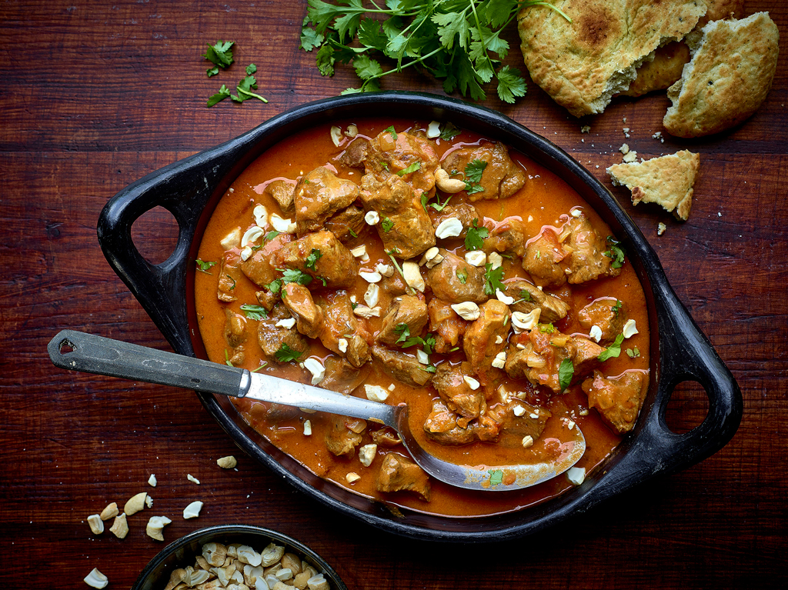

Lamb Curry

Description
This is a delicious meal for anyone who loves meat and lamb in particular. It is also relatively easy to cook. You can cook the rice or potatoes the way you like them. I prefer to eat my lamb with quinoa.
You can serve the lamb curry with vegetables. My favorite vegetable to serve with lamb curry is green beans. The color of green beans and the brown color of the lamb create a colorful dish. Combined with the yellow color of quinoa, this dish is not only tasty but also full of colors.
Ingredients
- 500g lamb
- 500g green beans
- 1 fennel
- 250g quinoa
- 1 onion
- grape seed oil
Steps
- Let quinoa swell for 10 minutes in boiling water
- Cut the onion, green beans and the fennel in small pieces
- Cook the onion and then the green beans and then the fennel in a pan
- Heat some grape seed oil in a pot and then cook the lamb in medium pieces
- Cook the lamb in curry sauce for twenty-five minutes on medium heat until the meat becomes very soft
- Serve the lamb, the vegetables and quinoa with a few pieces of cashews and a few leaves of parsley